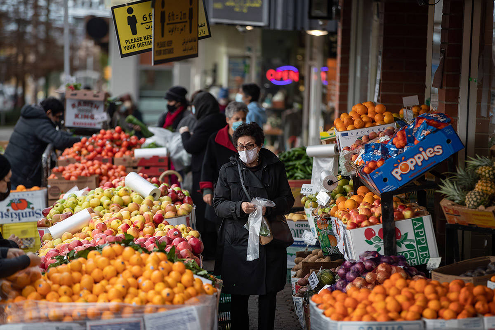

Ontario considers steps to safe reopening amid fears of COVID-19 variants
TORONTO - Ontarians will get an indication next week what a path to business reopenings will look like as COVID-19 numbers decline amid concerns that more contagious variants spreading here could fuel a third wave of infections even more devastating than the first two.
Read the full story on Toronto Star
Quebec reopens non-essential businesses but curfew maintained
Quebec Premier François Legault announced the loosening of some COVID-19 restrictions on Tuesday as the number of hospitalizations and daily cases decreases.
Read the full story on Global News
COVID-fatigued British Columbians need specifics, not vague advice: prof

A University of B.C. professor says that with COVID fatigue ramping up as the province reaches one year of restrictions, residents need specific advice from their health officials.
Read the full story on Nanaimo News Bulletin
New interprovincial travel restrictions now in effect in Manitoba
WINNIPEG -- Manitoba is officially under new travel restrictions as of today. On Tuesday, Premier Brian Pallister announced he would be amending the interprovincial travel rules as cases of the COVID-19 variant surge in Canada.
Read the full story on CTV
Covid-19 active cases as of Febuary 4, 2021. Latest update on The official website of the Government of Canada
Last data update 2021-02-04 19:00 EST
| Ontario | Quebec | British Columbia | Manitoba |
|---|---|---|---|
| 16,330 | 12,962 | 5,927 | 3,340 |